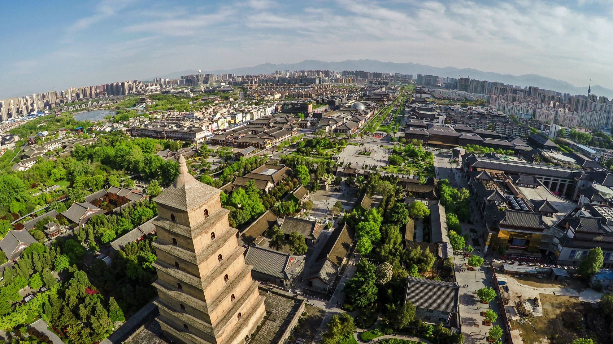

发展历史
西安，古称长安、镐京，是陕西省会、副省级市、关中平原城市群核心城市、丝绸之路起点城市、"一带一路"核心区、中国西部地区重要的中心城市，国家重要的科研、教育、工业基地 [1-5] 。西安是中国四大古都之一 [6] ，联合国科教文组织于1981年确定的“世界历史名城” [1] ，美媒评选的世界十大古都之一 [7] 。地处关中平原中部，北濒渭河，南依秦岭，八水润长安。下辖11区2县并代管西咸新区，总面积10752平方公里，2017年末户籍人口905.68万 [8-12] 。西安是中华文明和中华民族重要发祥地。长安自古帝王都，其先后有西周、秦、西汉、新莽、东汉、西晋、前赵、前秦、后秦、西魏、北周、隋、唐13个王朝在此建都。丰镐都城、秦阿房宫、兵马俑，汉未央宫、长乐宫，隋大兴城，唐大明宫、兴庆宫等勾勒出“长安情结” 。
